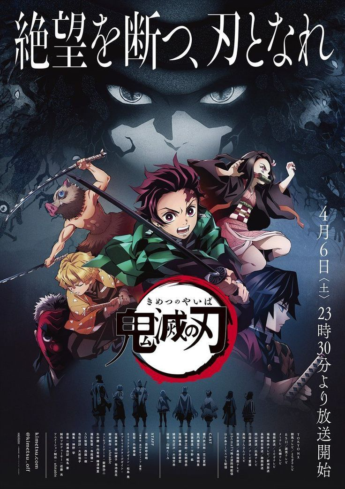
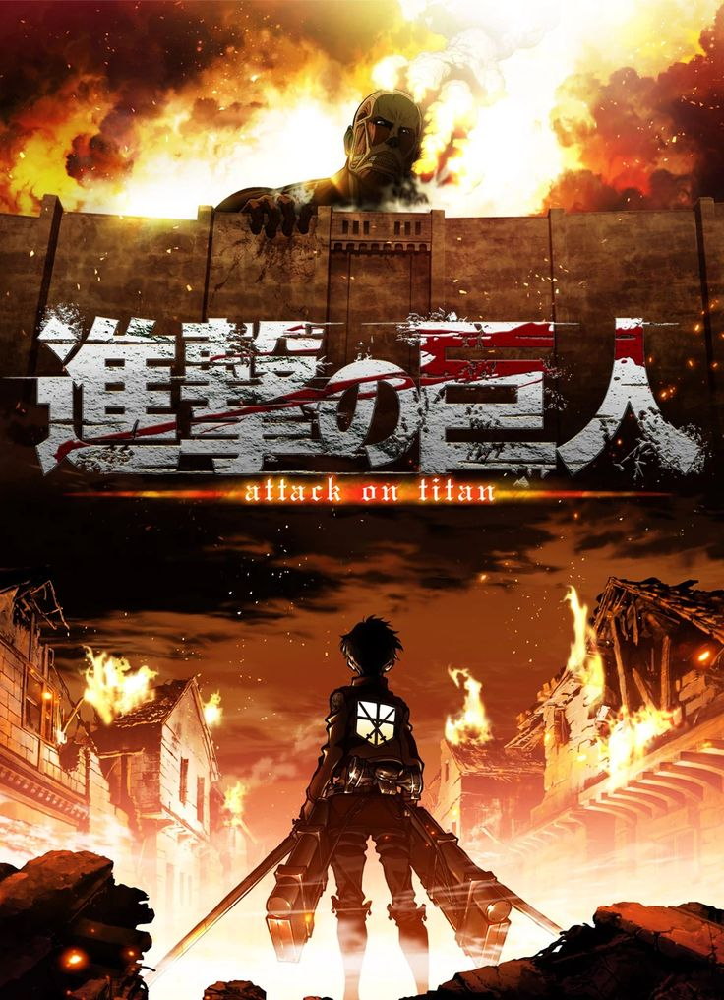
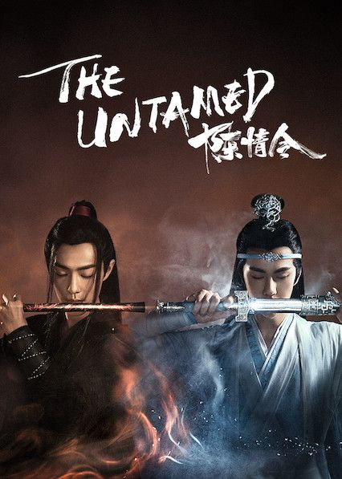
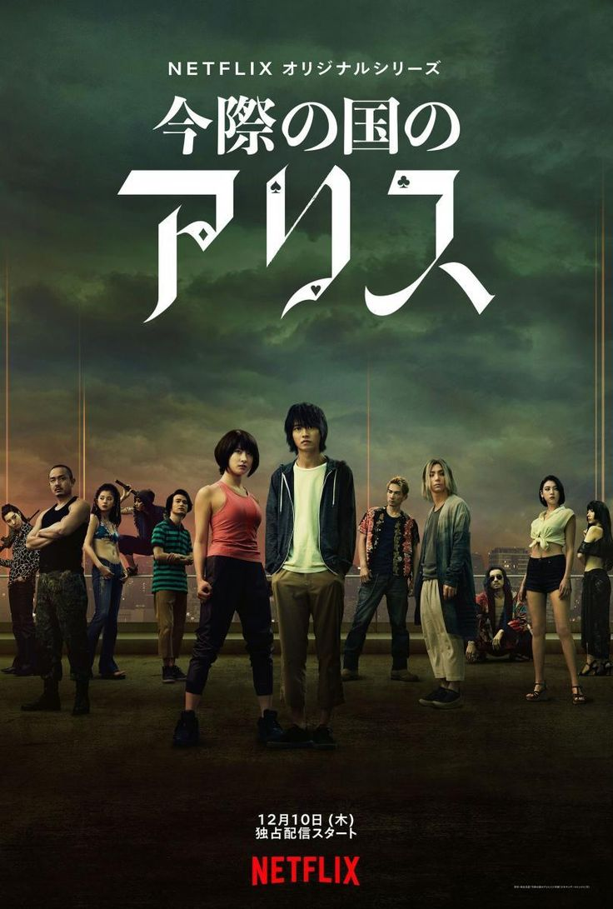
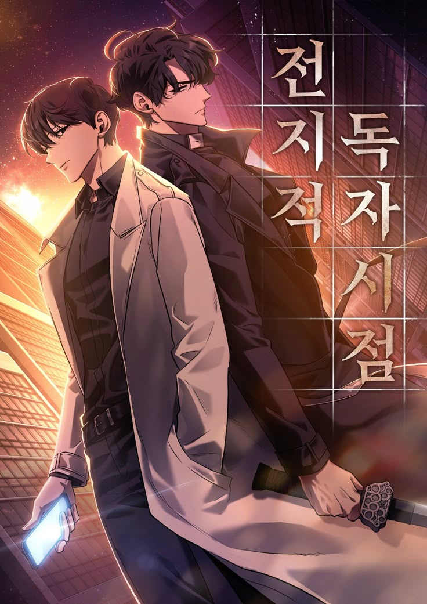

Descubre cuales han sido las 4 mejores series adaptadas de mangas hasta el momento.

1.Demon Slayer. (animacion)
Con su impresionante animacion y profundizacion en la historia de los personajes, se ha convertido en uno de los animes mas aclamados de todos los tiempos. La calidad de su animacion y la complejidad emocional de sus personajes le dan un lugar destacado entre las mejores adaptaciones. Las batallas visualmente asombrosas y el desarrollo emocional de tanjiro y su lucha por salvar a su hermana Nezuko han sido destacadas.

2. Attack on Titan (animacion).
Attack on Titan es uno de los animes mas influyentes de la decada. Su trama epica, los profundos dilemas morales y su animacion de altisima calidad la han convertido en una de las series mas impactantes y celebradas. La atmósfera apocalíptica, los intensos enfrentamientos y la compleja narrativa política han sido muy bien destacados. La mezcla de acción, intriga politica y sus inesperados giros de trama la han consolidado como un referente del anime moderno.

3.The Untamed (serie televisiva).
The untamed es una de las adaptaciones más exitosas de una obra de manhua que ha sido llevada a la televisión, destacando por la química entre los personajes principales y su exploración de temas como el amor, la lealtad y el sacrificio. La serie se convirtio en un fenomeno internacional, especialmente en Asia, por su mezcla de drama, acción y magia. Tambien se ha destacado mucho por la relacion entre Wei Wuxian y Lan Wangji.

4. Alice in Borderland (serie televisiva).
La serie de Netflix basada en este manga se ha ganado una gran cantidad de seguidores gracias a su intrigante premisa de supervivencia en un juego mortal dentro de un mundo alternativo. La serie es aclamada por su ritmo vertiginoso, las impresionantes escenas de accion y los giros sorprendentes, que hacen que los espectadores se mantengan al borde de sus asientos. Tambien se destaco por la mezcla de suspenso, accion y psicologia, con una adaptacion visualmente impresionante y un desarrollo de personajes convincente.

Esto es simplemente un vistazo a la gran variedad de increibles historias basadas en mangas que fueron animadas o se les dio una oportunidad para crear una serie de tv. Incluso ahora siguen saliendo anuncios de grandes historias que daran el salto de las paginas a la pantalla.
Hay un manhwa en particular que ha anunciado su animacion y tambien una pelicula, que ha sorprendido a sus seguidores y los tiene impacientes esperando por que llegue el dia en que la increible novela que despues tuvo su version manhwa, tenga version de animacion.
Quiza sepas de cual hablo, o quizas no, Hablo de Omniscient reader's view point, una novela original del duo de autores Sing Shong. Esperemos con ansias mas anuncios sobre fechas y demas actualizaciones sobre estos proximos proyectos.
Les dejo un link para que puedan ver el trailer de la pelicula si asi lo desean. :)
Trailer ORV
ir a la pagina principal